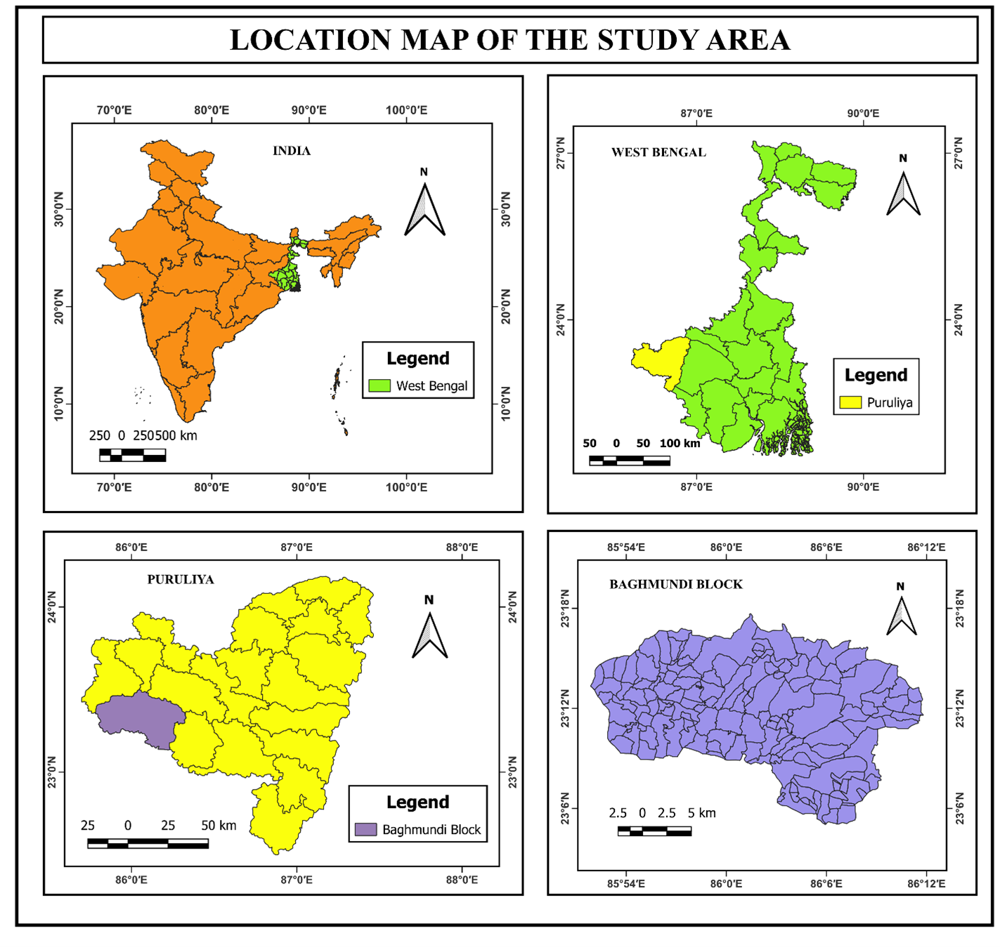

By Mouparna Dhar
An Importance-Performance Based Assessment of Pivotal Government Schemes in Baghmundi Block, Puruliya, West Bengal

India resides in its villages. This study focuses on Baghmundi block, a region characterized by its rugged terrain, significant tribal population (Santhal, Munda, Bhumij), and deep-rooted developmental challenges.
The research by Mouparna Dhar evaluates how effectively national schemes like MGNREGA and PMAY-G are translated into tangible outcomes at the Gram Panchayat level.
Importance vs. Performance matrix introduced by Martilla & James (1977) to identify urgent bottlenecks.
Normalized all raw administrative data onto a uniform 1-to-5 scale for scientific comparison.
A weighted formula to prioritize intervention: II = (Importance - Performance) × Importance
Visualizing the Performance of Pivotal Government Schemes
Top Priority GP (Improvement Index)
2.96
Matha GP
Launch a Block-Level Task Force to address systemic failures in bank credit for Self Help Groups in Tunturisuisa and Burdakalamati.
Organize special verification camps for NSAP bank account linkage to fix data errors preventing pension transfers.
Establish a quarterly platform for Pradhans to share strategies from "centers of excellence" like Baghmundi GP.